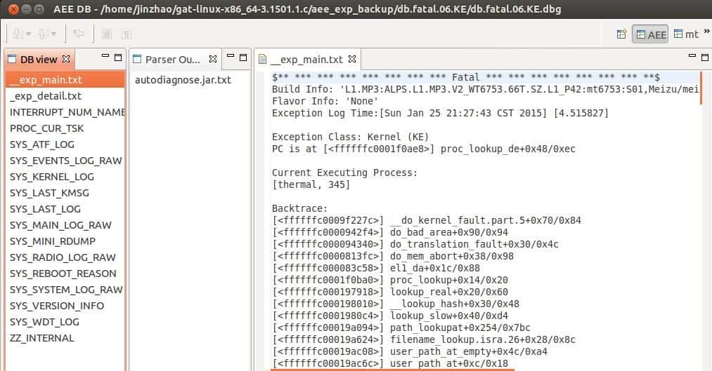
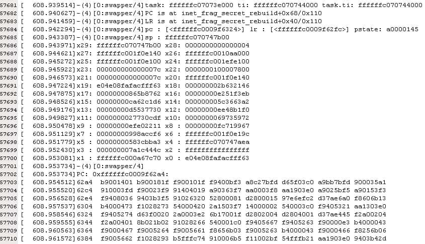
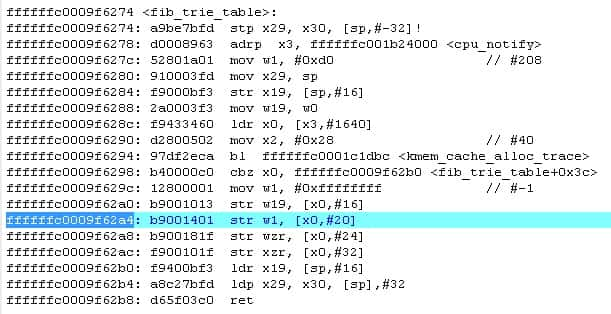
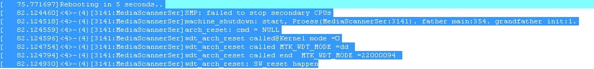
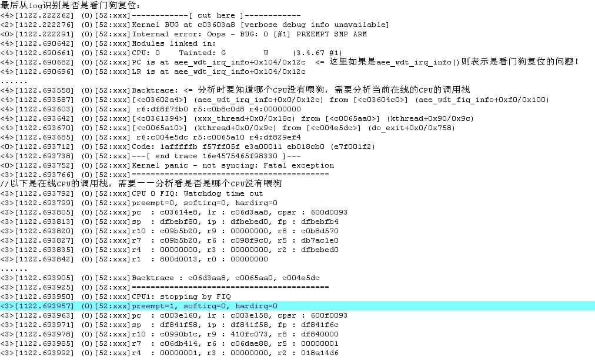
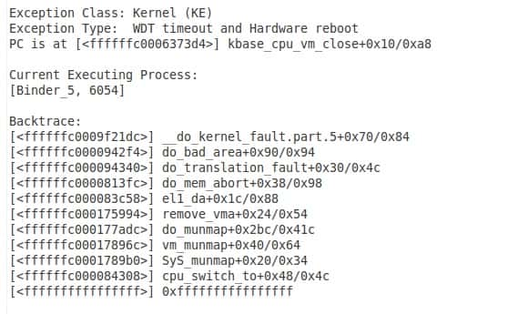

1. 内存优化测试
[toc]
1.1. 测试TP报点率：（正常范围：80-120Hz）
adb shell getevent -help // 查看获取事件的帮助，所有命令
adb shell getevent
➜ ~ adb shell getevent
//直接显示
add device 1: /dev/input/event0 //物理按键
name: "sci-keypad"
add device 2: /dev/input/event4 //耳机线控
name: "headset-keyboard"
add device 3: /dev/input/event2 //加速传感器/重力传感器
name: "accelerometer"
add device 4: /dev/input/event1 //屏幕
name: "focaltech_ts"
add device 5: /dev/input/event3
name: "alps_pxy"
//触摸屏幕后开始打印
/dev/input/event1: 0003 0035 000001e6
/dev/input/event1: 0003 0036 00000370
/dev/input/event1: 0001 014a 00000001
/dev/input/event1: 0000 0002 00000000
/dev/input/event1: 0000 0000 00000000
/dev/input/event1: 0003 0035 000001de
/dev/input/event1: 0003 0036 0000036b
/dev/input/event1: 0000 0002 00000000
/dev/input/event1: 0000 0000 00000000
/dev/input/event1: 0003 0035 000001d5
/dev/input/event1: 0003 0036 00000365
/dev/input/event1: 0000 0002 00000000
/dev/input/event1: 0000 0000 00000000
/dev/input/event1: 0003 0035 000001cb
/dev/input/event1: 0003 0036 00000360
- adb shell getevent -r
➜ ~ adb shell getevent -r
//直接打印
add device 1: /dev/input/event0
name: "sci-keypad"
add device 2: /dev/input/event4
name: "headset-keyboard"
add device 3: /dev/input/event2
name: "accelerometer"
add device 4: /dev/input/event1
name: "focaltech_ts"
add device 5: /dev/input/event3
name: "alps_pxy"
//触摸屏幕后开始打印
/dev/input/event1: 0003 0035 00000159
/dev/input/event1: 0003 0036 000002fa
/dev/input/event1: 0001 014a 00000001
/dev/input/event1: 0000 0002 00000000
/dev/input/event1: 0000 0000 00000000
/dev/input/event1: 0003 0035 00000155
/dev/input/event1: 0003 0036 000002f9
/dev/input/event1: 0000 0002 00000000
/dev/input/event1: 0000 0000 00000000 rate 70
/dev/input/event1: 0003 0035 00000150
/dev/input/event1: 0003 0036 000002f9
/dev/input/event1: 0000 0002 00000000
/dev/input/event1: 0000 0000 00000000 rate 99
/dev/input/event1: 0003 0035 00000149
/dev/input/event1: 0003 0036 000002f9
/dev/input/event1: 0000 0002 00000000
/dev/input/event1: 0000 0000 00000000 rate 100
- adb shell getevent -ltr
➜ ~ adb shell getevent -ltr
//直接打印
add device 1: /dev/input/event0
name: "sci-keypad"
add device 2: /dev/input/event4
name: "headset-keyboard"
add device 3: /dev/input/event2
name: "accelerometer"
add device 4: /dev/input/event1
name: "focaltech_ts"
add device 5: /dev/input/event3
name: "alps_pxy"
//触摸屏幕后打印
[ 57824.065040] /dev/input/event1: EV_ABS ABS_MT_POSITION_X 00000135
[ 57824.065040] /dev/input/event1: EV_ABS ABS_MT_POSITION_Y 00000336
[ 57824.065040] /dev/input/event1: EV_KEY BTN_TOUCH DOWN
[ 57824.065040] /dev/input/event1: EV_SYN SYN_MT_REPORT 00000000
[ 57824.065040] /dev/input/event1: EV_SYN SYN_REPORT 00000000
[ 57824.079200] /dev/input/event1: EV_ABS ABS_MT_POSITION_X 0000011c
[ 57824.079200] /dev/input/event1: EV_ABS ABS_MT_POSITION_Y 0000032f
[ 57824.079200] /dev/input/event1: EV_SYN SYN_MT_REPORT 00000000
[ 57824.079200] /dev/input/event1: EV_SYN SYN_REPORT 00000000 rate 70
[ 57824.089210] /dev/input/event1: EV_ABS ABS_MT_POSITION_X 00000109
[ 57824.089210] /dev/input/event1: EV_ABS ABS_MT_POSITION_Y 0000032a
[ 57824.089210] /dev/input/event1: EV_SYN SYN_MT_REPORT 00000000
[ 57824.089210] /dev/input/event1: EV_SYN SYN_REPORT 00000000 rate 99
[ 57824.099281] /dev/input/event1: EV_ABS ABS_MT_POSITION_X 000000f2
[ 57824.099281] /dev/input/event1: EV_ABS ABS_MT_POSITION_Y 00000325
[ 57824.099281] /dev/input/event1: EV_SYN SYN_MT_REPORT 00000000
[ 57824.099281] /dev/input/event1: EV_SYN SYN_REPORT 00000000 rate 99
- getevent -c 10 //输出10条信息后退出
- getevent -l //将type、code、value以对应的常量名称显示
1.2. 手机上抓取log：
- 在拨号界面输入：##3646633## ，然后找到DEBUG&LOG抓取对应log数据
1.3. adb 命令抓取log：
- adb monkey -s 1 -p com.freeme.launcher --ingorncrashs --ingorntimeout 999999999 跑monkey，com.freeme.launcher为包名，999999999为次数
- adb shell top -d 3 > top.log log
- adb shell top > top.log
- adb bugreport > bug.log
- adb shell pm list packages 获取手机中所有应用包名
- adb monkey 获取跑monkey的所有命令
1.4. 手机常见问题及测试方法：
- 能开机，卡死在一些界面上。 ----这种情况，有几个步骤：先按power键看是否可以正常休眠唤醒。如果power键有反应，再插USB，看是否可以正常检测到ADB，如果可以正常检测到ADB，那可以通过ADB shell getevent 来看是否是TP驱动没有报点。
- 开机卡死，按power键没反应。 ----需要抓取mtklog，看是否有生成aee的log文件夹，有的话需要通过gat工具来解析。
步骤如下：
1：电脑端打开应用程序 gat-linux-x86_64-3.1501.1.c\gat-linux-x86_64-3\modules\MediatekLogView\MediatekLogView；
2：打开aee目录里面的文件，如” db.fatal.06.KE.dbg“，可以直接拖进来。 
- 不能开机，需要抓取串口log分析。 简单分析步骤： 1：抓取串口log[MTK 的波特率需要设置为921600] 
2：确认PC指针指到具体函数和具体函数 在alps/prebuilts/gcc/linux-x86/aarch64-linux-anroid-4.9/bin$./aarch64-linux-android-addr2line -e vmlinux -f -C 0xffffffc0009f62a4 确定具体文件和行号 alps/prebuilts/gcc/linux-x86/aarch64-linux-anroid-4.9/bin$./aarch64-linux-android-objdump -d vmlinux 
3：有时候kernel看到了异常，但不一定就是kernel的问题，有可能是上层主动发了重启之类的命令，可以在log中看类似的打印： 
WatchDog超时 

HW reboot Hardware reboot的成因：MT6592平台芯片有一个External watch dog，软件每隔30秒要去踢一次，若没有踢到，就会触发软件Watch Dog Timeout重启；
若软件有在规定的时间内(30秒)去踢这个External Watch Dog，但是由于硬件原因，导致External Watch Dog没有及时被踢到，那么这个External Watch Dog最多会等待60秒的时间，60秒之后会直接触发硬件重启，这就是所谓的Hardware reboot
至于是什么样的硬件原因导致无法及时提到External Watch Dog，最常见的一种是bus hang住， 比如不合理的读写寄存器就会导致bus hang住；也有一些是硬件设计不合理，或者硬件出现故障导致机器乱死，或者硬件某些器件不稳定，导致Hardware reboot 如果是因为读写寄存器导致bus hang住，进而触发Hardware reboot，一般在last pc 和last kmsg中会有体现，每次最后的PC或者最后打印出来的几句log都是一样或者相似的 若是硬件不合理或者硬件出现故障或者硬件不稳，这种在last pc 和last kmsg中就没有规律性了， 这种case，一般都是对照之前的项目，看之前项目是否有出现？ 若之前项目稳定，而现在项目有Hardware reboot，则对照之前项目跟现在项目在硬件上的差异，然后通过硬件实验来理清问题 
1.5. 通过查找关键字查看log：
通过查找："null" "error" " "E/"，"Fatal","NullPointerException","Build fingerprint:","exception","anr"，"DexOpt"等的错误信息，来定位问题
空指针问题： NullPointerException： 这个直接找到java代码，首先分析为什么会是空指针，如果逻辑上没有问题，加上一个判断就可以，也就是说如果为空的时候再次赋值或者直接返回
没有捕获异常问题： Exception：能捕获的话捕获
ANR问题: 例如：E/ActivityManager( 957): ANR in com.ipanel.join.appstore
Fatal问题 Fatal： 比较严重了，很多都很动态库和空指针有关，一般会接下来打印"Build fingerprint:"或”NullPointerException“
动态库问题
执行DexOpt错误 DexOpt:解压或优化extract+optimize DEX出的问题
死机问题： 例如：WARN/SharedBufferStack(312): waitForCondition(LockCondition) timed out (identity=19, status=0). CPU may be pegged. trying again.
12-
1.6. 通过命令查看内存
adb shell dumpsys meminfo 包名
1.7. 查看进程
adb shell ps|grep 包名